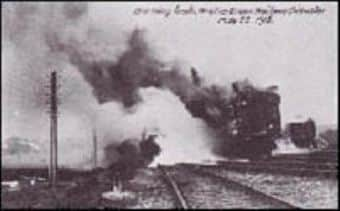
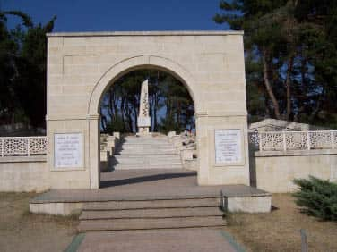
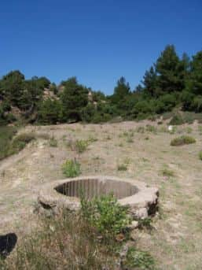

Tuncay Yılmazer
dryilmazer2003@yahoo.com
O gün, hava koşulları açısından tren kazası olabilecek bir gün değildi aslında...
Güneş bütün ihtişamıyla yeni doğmuş, gökyüzü pırıl pırıldı...
Takvimler 22 Mayıs 1915’i göstermekteydi.
Londra-Glaskow hattında çalışan express trenlerin durmaksızın geçmesini sağlamak için, lokal yolcu trenlerinin, yük trenlerinin bir süre bekletildiği önemli bir nokta olan İskoçya sınırına yakın Quintinhill mevkiinde, trafiği yoğun olacak bir gün daha başlıyordu.
Bu istasyonda ayrıntılı bir sinyalizasyon sistemi kuruluydu.
Birinci Dünya Savaşı başladığından beri asker taşıyan trenler nedeniyle demiryolu trafiği daha da artmıştı.
Sinyal görevlisi George Meakin o gece nöbetini James Tinsley’e devredecekti. Aralarında daha önceden anlaştıkları üzere Tinsley, saat 06.00’da başlaması gereken nöbetine yarım saat geç gelecekti o sabah... Ancak savaş şartlarının getirdiği ağır iş yükü günlerdir bu hatta çalışan iki görevliyi bir hayli yormuştu.
Tinsley o gün zamanında gelememişti görev yerine. Bütün geceyi uykusuz geçirmenin verdiği yorgunlukla George Meakin ana hatta lokal bir treni gereğinden fazla beklettiğini de unutmuştu.
İskoçyanın Larbert bölgesinden Liverpool’a giden yolcu treni aynı saatlerde hızla Quintinhill’e yaklaşmaktaydı. Trenin yolcuları, 52. Tümen’e mensup, Liverpool’dan Gelibolu’ya gidecek olan 563 asker ve subaydan oluşan 7/Royal Scots Taburu’ydu.
İmparatorluğun en seçme birliklerinden birini taşıyan bu trenin makinisti Quintinhill’e girerken yolu üzerinde bekleyen treni görüp frenlere bütün gücüyle asıldığında artık çok geçti.
İki tren kafa kafaya çarpıştı. Müthiş bir patlama oldu. Alevler yan taraflarda bekleyen kömür yüklü vagonlara da sıçramıştı. Korkunç patlamalar birbirini takip etmiş, ortalık bir anda cehenneme dönmüştü.

Quintinhill tren kazası
Dehşet sahneleri bununla bitmemiş, tehlike sinyalini veren Meakin bir kere daha geç kalmıştı. Londra’dan Glaskow’a gitmekte olan expres tren de bu alev topunun içine daldı. İstasyondaki yangın 24 saat sonunda ancak kontrol altına alınabilmişti. İngiltere tarihinin bu en büyük tren kazasında, 7/Royal Scots Taburu mevcudunun büyük bir bölümü yanarak feci şekilde öldü ya da yaralandı. (215 ölü, 191 yaralı)[6]
Sinyalizasyon hatası sonucu olan bu büyük kazadan kurtulabilenler tedavileri yapıldıktan kısa bir süre sonra yeniden gemilerle Gelibolu’nun yolunu tuttular. Çok değil bir buçuk ay kadar sonra başka bir hatanın kurbanı olacak, Gelibolu Yarımadası’nın Zığındere mevkiinde yeterince bombardıman yapılmamış Türk siperlerine saldırmaları emri verilecek, bu da onlara pahalıya patlayacaktı.
* * *
Aynı tarihler İngiliz Hükümeti’nin Gelibolu Harekâtı’nın akıbetini tartıştığı, tamam mı devam mı sorusuna yanıt aradığı günlerdi. Zira harekâtın Başkomutanı Hamilton’un yeni takviye kuvvet isteği Londra’ya ulaşmıştı ve bir şekilde cevap verilmesi gerekiyordu.
Savaş Bakanı Lord Kitchener, harekâta son verilmesinin son derece mahzurlu olduğu düşünmekteydi. Bu takdirde henüz tarafsız görünen Balkan Devletlerinin kazanılma umudu ortadan kalkar, Britanya İmparatorluğu’nun Müslüman âlemi üzerindeki nüfuzu da sarsılırdı. Almanların eli güçlenir, ANZAK ve Fransızlarla birlikte ağır kayıplar verilerek kazanılmış toprakların da kaybedilme tehlikesi de ortaya çıkardı. Ancak Kitchener, daha fazla takviye güç gönderilmesiyle de sonuç alınabileceği kanaatinde de değildi. Elde zaten yeterince takviye kuvvet de yoktu.
Mevcut durumun devamı, en azından Türklerin Çanakkale’de daha fazla asker bulundurmalarına yol açıyor; Mısır, Suriye ve Kafkasya’ya asker kaydırmalarını önlüyordu.
Kafası karışık Çanakkale Komitesi üyelerini ikna eden yine W. Churchill olmuştu. Churchill’e göre Batı Cephesi’nde yeni bir şey yoktu. Ne Almanların yakın zamanda yapabilecekleri bir hücumda başarı şansı vardı ne de Müttefiklerin... Kurul üyelerine yazdığı mektupta Batı Cephesini tarif ederken; “Satranç oyununda şahın oynayamaması gibi her iki taraf kuvvetleri de çivilenip kalmışlardı” diye yazacaktı[7]. General Hamilton’un istediği takviyeler gönderilmeli, Çanakkale’de bir an önce sonuç alınmalıydı.
Gerçekten de Müttefikler Fransa’daki çarpışmalarda her geçen gün daha da çözülmesi zorlaşan bir kördüğümle karşı karşıyaydılar. Tipik bir örnek vermek gerekirse Aubers Ridge Muharebesi’nde, doğru dürüst bir yer kazanmaksızın 11.000 kişiye yakın bir kayıp vermişlerdi.
Churchill’in öne sürdüğü argümanlar, 7 Haziran’da toplanan Çanakkale Komitesi’nin üyelerini (Savaş Bakanı Lord Kitchener’de dâhil) ikna edebilmiş, General Hamilton’un takviye isteğine olumlu yanıt verilmesi kararı çıkmıştı[8]. (Yolda olan 52. Tümen’le birlikte 53. ve hemen sonrasında 10, 11, ve 13. Tümenlerle toplam 5 Tümenlik takviye kuvveti içeriyordu.) Bu toplantı neticesinde Fransa’daki Britanya Karargâhı, (Fransız Orduları Başkomutanı Joffre’nin tüm itirazlarına rağmen) 1916 İlkbaharına kadar savunmada kalma kararı aldı. Gözler bir kere daha Çanakkale’ye çevrilmişti.
Hamilton ve kurmayları, yeni gelecek takviye kuvvetleriyle Anafartalar sahiline yapılacak bir çıkarmayla Tekketepe-Kavaktepe eksenini ele geçirerek Akbaş Limanı’na inmeyi; ANZAK’tan, Sarı-bayır tepelerine yapılacak sürpriz bir saldırı ile Kocaçimentepe’yi ele geçirmeyi planlıyorlardı. Osmanlı kuvvetleri hiç beklemedikleri yerlerden darbeyi yiyeceklerdi.
Ağustos başında yapılması düşünülen bu büyük saldırıdan önce bir şeyler yapılması gerekliydi kuşkusuz. İngiliz resmî tarihinin ifadesiyle; “Önünde kesin netice almaya azmetmiş bir düşman ve hemen gerisinde deniz bulunan bir ordunun tamamen pasif bir vaziyette kalması mümkün değildi”’[9].
Hedef belirlenmişti.
4-6 Haziran 1915 Üçüncü Kirte Muharebesi’nde, İngilizlere hayli ağır kayıp verdiren Zığındere’nin her iki yanındaki Türk mevzileri...
* * *
Yolunuz Gelibolu Yarımadası’na düştüğünde Alçıtepe köyünün batısına doğru toprak yolu izlerseniz, Son Ok Anıtı’nı geçtikten sonra küçük bir tepenin üzerinde bir asker heykeli, sonrasında da hemen sağ tarafınızda mütevazı bir mezarlıkla karşılaşırsınız.

Sargıyeri Şehitliği
Zığındere Sargıyeri Şehitliği’dir burası... Tarihimizin en kanlı savaşlarından biri olan Zığındere Muharebeleri’nin (28 Haziran-5 Temmuz 1915) anısına yapılan şehitlik ve iki ayrı heykel. Girişteki asker heykeli 2. Dünya Savaşı’nda kullanılan bir silah taşımaktadır(!) Kitabedeki bilgiler ise özensiz hazırlanmış olup yanlış bilgiler içermektedir. (Hele hele bir İngiliz zırhlısı tarafından bombalanıp 18.000 kişinin öldüğü bilgisi tamamen uydurmadır). Daha ileride ise Çanakkale Savaşları’nda genç bir teğmen olarak bölgede görev yapmış General Nuri Yamut’un yaptırdığı anıt fark edilir. Rahmetli paşa, yıllar sonra bölgede görev yaparken silah arkadaşlarının her yana dağılmış kemiklerini toplattırıp gömdürmüş, üzerine de kendi imkânlarıyla bu anıtı yaptırarak onlara karşı vefa borcunu ödemiştir. Evet, hepsi budur! Bir hafta içerisinde on bini şehit olmak üzere on altı bin insanımızı kaybettiğimiz Zığındere’yi hatırlatan semboller bunlardır. Peki ya böyle mi olmalıydı?
* * *
Karşılıklı siperler arasında her iki tarafın da kıpırdayamaz hâle geldiği mevzi muharebelerinde yeni bir açılım kaçınılmaz görünmekteydi. Kolordu Komutanlığı’na terfi eden General Hunter Weston ve Çanakkale’deki Fransız Kuvvetleri Komutanı General Gouraud, Zığındere ve Kerevizdere sırtlarından Türkleri geri atmadıkça merkez hatların Kirte’ye ilerleyemeyeceği konusunda hemfikirdirler.
Birinci Kerevizdere Muharebesi’yle Fransızların “başarı” olarak kabul ettikleri, Müttefik cephe hattının sağ kanadındaki ilerlemenin (çok fazla önemli olmayan bir ilerlemeydi bu) solda da yapılması kaçınılmazdı. Bu açıdan bakıldığında Zığındere mevzilerine yapılacak saldırı Osmanlı Güney Grubu kurmayları için bekleniyordu aslında.
Kirte Deresi’nin batı tarafındaki Zığındere mevzilerini Albay Rafet komutasındaki yaklaşık 8000 kişilik bir kuvvete sahip 11. Tümen savunmaktadır. Bu hattın deniz tarafında kalan sağ kanadını Yarbay Sabri komutasındaki 33. Alay, sol kanadı ise Yarbay Şevki komutasındaki 126. Alay tutuyordu[10].
İngiliz haritalarında Türk siperleri bölgelere göre harflerle adlandırılmış, bölgelerdeki siper ağı da numaralandırma yoluna gidilmişti[11]. Konunun daha iyi anlaşılması açısından bizim de aynı yöntemi kullanmamızda bir mahsur yok. Buna göre Zığındere’nin batısında kalan siperlerin J10’dan, J13’e kadar olan kısmını (ve denize paralel J13a siperini) ağırlıklı olarak 33. Alay tutarken; İngilizlerin Fir Tree Spur (Çam Ağacı Sırtı) dedikleri bölgede olan H siperlerini 126. Alay savunmaktaydı.
İngilizler, Kerevizdere’de Fransız topçu gücünün Türk mevzilerine nasıl zarar verdiğini bildikleri için aynı gücün Zığındere’ye yapılacak taarruzdan önce kullanılması konusunda ısrarlıydılar. Sonunda La Demosielle (ya da Türk piyadesinin taktığı isimle Karakedi!) ve Cropuillard adı verilen Fransız havanlarının da bu bölgede kullanılmasına karar verilmişti. (Müttefik kuvvetlere Japonların gönderdiği havanlar etkili olmakla birlikte çabuk bozulmuş, kullanma kılavuzlarının Japonca(!) olması nedeniyle yeterince kullanılama-mıştı[12]).
Harekâtı, yarımadaya birkaç gün önce tayin edilen, kuvvetlerin kolordu seviyesine çıkması nedeniyle kolordu komutanı olan Hunter Weston’un yerine atanan General De Lisle yönetecekti. Zığındere Muharebesi’nde dikkati çeken başka bir husus ise harekât için 12.000 atımlık mermi ayrılmış olmasıdır. İkinci Kirte Muharebesi’nde 6.000 atım kullanıldığı düşünülürse arazi olarak hayli küçük bir bölgede ne kadar yoğun bir bombardıman olduğu kolaylıkla anlaşılabilir. HMS Talbot Kruvazörü ile HMS Scorpion ve HMS Wolverine Destroyerleri de Türk siperlerini denizden sürekli bombardımana tutacaklardı.
Saldırıya 29. Tümen, Hint Tugayı ve İskoç askerlerinden oluşan 52. Tümen’in 156. Tugayı katılacaktı. Zığın Sırtı adı verilen, Zığındere’nin batı tarafında 87. Tugay ilerleyecek, J9, J10 ve J11 siperlerini Hint Tugayı’na bağlı Gurkha ve Sih taburları ise deniz tarafında yamaçlardan ilerleyen, denize paralel ana bağlantı siperi olan J13a’yı ele geçireceklerdi. 86. Tugay birlikleri ise J11 siperi ele geçer geçmez harekete geçecek ve J13’e kadar işgali genişleteceklerdi. 1/Lancashire Fusiliers Taburu ise derenin içinden ilerleyecek ve soldan saldıran İskoçyalılarla bağlantıyı sağlayacaktı.
Bombardımanın etkili olması Osmanlı siperleri önünde bulunan dikenli tel hatlarının zarar görmesi için de önemliydi. Bu teller, İngilizlerin makaslarla kesemeyeceği kadar kalındı.[13]
Hedefi J siperleri olan ve Zığın Sırtı’nda ilerleyecek 87. Tugay’ın Komutanı Tuğgeneral Marshall, tam çaprazlarında derenin doğu tarafında bulunan Bumerang Tabyası adını verdikleri Türk ileri karakolunun daha önceden yok edilmesinde ısrarlıydı. Çünkü buradan açılacak makineli tüfek ateşi ciddi engel teşkil edebilirdi. Bu tarihten önce birkaç kez baskın yapıldıysa da bu tabya bir türlü ele geçirilememişti.
Tümenin taarruz emri bana ayın 26’sında geldiğinde bizi yandan ateşe tutacak olan Bumerang Tabyası’ndan söz edilmemesi çok garipti. Bunu dile getirdiysem de bana tugayımın siperleri ele geçirmede başarılı olması hâlinde Bumerang’ın kendiliğinden düşeceği söylendi. Ben de bunun hiç kuşkusuz böyle olacağını, ama bu arada da kendi askerimden çok sayıda kayıp vereceğimi anlattım. Sonunda Bumerang’ı harekâtın başlama saatinden beş dakika önce almamız kararlaştırıldı. General Gouraud bunun için bize bir Fransız subayının komutasındaki bir havan topunu ödünç verdi. (Tuğgeneral W. Marshall)[14]
Hunter Weston’un önerisiyle H siperlerinin bulunduğu Çam Ağacı Sırtı (Fir Tree Spur) bölgesi 156. Tugay’a verilmişti. Ancak ana planda bombardıman ağırlıklı olarak Zığındere’nin batı tarafındaki mevzilere yapılacaktı[15]. Bu durum hücum edecek olan İskoçyalılara çok pahalıya patlayacak ve ağır kayıp vermelerine yol açacaktır.
27/28 Haziran gecesi saat 02’den itibaren İngiliz topçusunun bombardımanı başlamış ve sabaha doğru giderek yoğunlaşmıştır. Osmanlı tarafı kaçınılmaz saldırı gününün geldiğinin farkındaydı. Ancak siperlerdeki tahribatın derecesi gün ışıyınca ortaya çıkacaktı.
İngilizlerin Bumerang adını verdikleri, Müttefik siperlerine en yakın Türk ileri karakol hattı, -burayı 33. Alay’ın, 2. Taburu’nun, 5. Bölüğü savunmaktaydı- büyük saldırının hemen öncesinde vahşi ıslıklarla uçuşan Fransız havan topu mermilerinin birbiri ardına patlamasıyla yok edilmişti[16].
Bir İngiliz askeri Fransız havanlarının Bumerang tabyası üzerinde uçuşunu ve patlayışını anlatır anılarında:
Şaşırtıcı bir sessizliğin ardından tonlarca toprak, istihkâm parçaları, cesetler, üniformalar ve kollarla bacaklar havaya saçıldı. Hiç eşi olmayan şiddette bir patlama, üzerinde durduğumuz araziyi salladı, pis kokulu dumanını sis gibi etrafa yaydı. Patlamanın ürkütücü kükremesi dere yatağı boyunca yankılandı ve sonra denizdeki gemilerin toplarının gürlemesiyle bastırıldı. Hava temizlenmeden ikinci bir mermi daha ateşlendi. (Deniz Çavuş F.W. Johnston)[17]
Saat 10.45 sıralarında önce Bumerang tabyasına 1/Border Alayı’nın saldırısı başladı. Çok kısa bir süre içerisinde, harekâtın başından beri İngilizlere sorun olan bu tabya ele geçirildi. Saat 11’de binlerce İngiliz askeri çılgınca bağırarak siperlerinden fırlamış, aynı anda Türk tarafının makineli tüfekleri de çalışmaya başlamıştı. Geceki yoğun bombardımanın trajik etkisi bu saldırıyla ortaya çıktı. 33. Alay mevzileri ağır derecede tahrip edilmişti. J10-J11 derken J13’e kadar olan siperler bir bir İngilizlerin eline geçti. Nepalli Gurkhalar deniz tarafından geçit vermez kayalıklar ve küçük vadilerden geçerek denize paralel ana bağlantı siperini -J13a- ele geçirdiler[18].
Zığınderede’ki Müttefik cephesinin sağ yanını oluşturan 156. Tugay’a mensup İskoçyalı askerler ise derenin solundan saldırıya geçenler kadar şanslı değildi. Buradaki Türk mevzileri, bombardımanın daha çok deniz tarafındaki siperlere yapılması nedeniyle sağlam kalmıştı. Ara bölge, Çam Ağacı Sırtı’ndan çapraz ateşe alınan İskoçyalı askerlerin cesetleriyle doludur. Öyle ki öğle sıralarında, Tugay Komutanı Tuğgeneral W. Scoot-Moncrieff de ölenlerin arasında olduğu haberi genel karargâha ulaşmıştı. İngilizler bir generallerini daha kaybetmişlerdir Gelibolu’da[19]…
Osmanlı Güney Grubu’nun Zığındere’deki mevzileri, saldırı başladıktan sonra birkaç saat içerisinde elden çıkmış, ardı ardına gönderilen ihtiyatlar da özellikle 33. Alay siperlerinin yeniden ele geçirilmesini sağlayamamışlardı. Bugünkü Nuri Yamut Anıtı’nın olduğu yere kadar ilerleyen Müttefik kuvvetlerin, Osmanlı mevzilerini batıdan kuşatması gibi, bir tehlike de baş göstermişti.
Durum öyle bir kritik hâl almıştı ki, Güney Grubu Komutanı Weber Paşa, bu kadar ağır kayıpla muhtemel bir İngiliz taarruzunu önleyememe endişesine kapılarak, daha geriye çekilmeyi bile önerdi. Emri yazdırmak için çağırdığı Yüzbaşı Mehmed Nihad, bunun bir felaket olacağını bildirir Alman generale.
28 Haziran’da sağ cenahımıza karşı başlayan İngiliz taarruzu başlangıçta bu cenahı yararak düşman denizle Zığındere arasından 2-2,5 kilometre kadar geriye girmiş ve nahoş bir vaziyet ortaya çıkmıştı. O derece ki Güney Grubu Kumandanı olan ve bu zamana kadar soğukkanlılığını koruyabilen General Weber, Grup 1. Şube Müdürü olan bendenize artık başka çare kalmadığını söyleyerek; Alçıtepe önündeki son savunma hattına çekilmeyi gerektiren emri yazmamı emretmişti. Ben de generali vazgeçiremeyince derhal (5.) Ordu Kurmay Başkanı Yarbay Kâzım Bey’e (Diyarbakırlı Kâzım Paşa Hazretleri) haber vermiştim ve kendilerinden: “Ben şimdi geliyorum. Kesinlikle muhalefet et ve orada vazifeli bir Türk subayı olduğunu unutma!” emrini almıştım. Haberdar edilen Liman Paşa da Weber’i telefonda adamakıllı haşlamış ve nihayet emir kumanda buhranı geçiştirilmişti[20].
Soğukkanlılığını koruyan Liman Paşa askerde paniğe yol açabilecek böyle bir geri çekilmeyi reddetmişti. Albay Rafet Bey bozgun havasından kurtulmak için çok çabaladı. Ancak öğleden sonra ve gece arka arkaya yapılan taarruzlarla İngilizler sökülüp atılamadılar. Türk resmî tarihinin ifadesiyle “alan aldığıyla veren verdiğiyle kalmıştı”[21].
“Siperler muharebede derin birer mezbaha halindeydi” diye yazmıştı Güney Grubu Harekât Şube Müdürü Bursalı Mehmed Nihad:
Muharebe başlar başlamaz her makam elindeki yedek askeri ileri sürüyor ve bunu yapmadan rahat edemiyordu. Sebebi gayet basitti. Bombardıman o kadar müthiş olurdu ki bu ateşin altında ileri hatlarda canlı insan kalacağına ihtimal verilmezdi.[22]
İngilizler 25 Nisan çıkarmasından bu yana ilk kez önemli bir başarı kazanmışlardı. Gazeteci Ashmed Bartlett de sevinenlerin başında geliyordu. Bartlett’in Zığındere Muharebesi’nin ilk gününün sonrasındaki gözlemleri bizim için çok önemlidir. Zira İngilizler 25 Nisan çıkarmasından bu yana ilk kez bu kadar -neredeyse 1 mil- ilerlemeyi başarabilmişler, hedefe bu kadar yakın olduklarını hissetmişlerdi. Aynı yazarın ifadesiyle; “Zafer semasında bulunan Türk savaş yıldızının son noktasına ulaştığı ve artık sönmeye başladığı açıkça görülüyordu”.
Bartlett raporunda; “28 Haziran’da elde edilmiş muvaffakiyet, bu ana kadar tatbik edilmekte olan savaş taktiğinin değiştirilmesinden ve topçumuz tarafından açılan takviye ve himaye ateşinde pek çok tadilat yapmasından ve piyade ile topçu silahları arasında pek güzel bir ortak ahenk meydana gelmesinden ileri gelmiştir” diye yazmıştı.
Aynı başarıyı İskoçyalıların 156. Tugayı’nın da gösterdiğini söylemek mümkün değildi. Bir teğmen nişanlısına yazdığı mektupta; “İçimizde sağ kalanlar her şey bittiği zaman çıldırma raddesine gelmiş bulunuyorlardı” diye yazmıştı. 52. Tümen’in Komutanı General Egerton, bir tugay komutanını ve yüzlerce askerini kaybettiği bu saldırı da Kolordu Komutanı Hunter Weston’un “Enikleri ava alıştırma partisi” yorumunu duyduğunda çileden çıkacak, bir süre sonra da sinir krizi geçirerek Gelibolu’yu terk etmek zorunda kalacaktı[23].
Ele geçirilen siperlere ait gözlemlerini not eden Bartlett, Türk cesedlerinin yakılmasına da tanık olacaktır:
Ötede beride yarısı toprak içerisine sokulmuş cesetler, alelacele kazılmış mezarlar, bazıları kırık ve ekserisi sapasağlam yüzlerce tüfek ve süngü, yüz binlerce atımlık kurşun, siper kazmaya mahsus alet ve edevat, ekmek somunları, askeri eşya, asker mektupları, imamlardan birinin vaaz kürsüsü, kaput ve çantalar, battaniye ve çuvallar, mutfak edevatı, odun yığınları; cesur askerlerimizin süngü hücumuyla Türklerin içine saldırdığı zaman nasıl bırakılmışsa öyle duruyordu. Muhtelif yerlerde büyük büyük ateşler yakılmıştı. Etrafta bulunan ve alelacele toplanan Türk cesetleri, bu sıcak iklimde bir an önce kurtulmak en mühim bir mesele teşkil ettiğinden dolayı ateşte yakılıyordu. Bunlardan etrafa yayılan çürümüş ceset kokusu hakikaten dayanılamayacak derecede iğrençti[24].
Sıcak havada kokan cesetler İngilizler içinde sorundur. Salgın hastalık tehlikesini de önlemek için ölü Türk askerlerinin cesetleri yakılacaktır[25].
Ashmed Bartlett’in Zığındere’deki bazı gözlemleri Çanakkale Muharebeleri’nde bugün bile hâlâ tartışılan kimyasal silah kullanılma şüphelerini daha da artırıyor:
Yeni işgal edilmiş olan siperleri teftişten dönen tümen komutanı ile beraberindeki kurmay heyetine tesadüf ettim. Bu yolda yine aynı şekilde bir sel gibi akıp giden teskerecilere de rastladım ki bunlar son 24 saat zarfında hiç durmadan yaralılarımızı taşımakla meşgul idiler. Hücumumuzun son derece başarılı olduğu ve düşman siperlerinde canlı bir ferdin kalmadığını övünerek anlatıyorlardı. Teskereciler yeni hazırlamış olduğumuz ufak bir mezarlığa gömmek üzere maktullerimizi de taşıyorlardı.
Burası da derenin içi gibi enkaz ve pislik ile doludur, her taraftan dayanılmaz derecede iğrenç koku yayılıyor ve milyonlarca sinek sürülerle hücum ediyordu. Bir köşede tüfeklerini dizleri üzerine aykırı koymuş ve birlikte oturmuş yedi Türk vardı. Bunlardan biri, arkadaşının boynuna kolunu dolamış ve yüzüne mütebessimane bakıyordu. İşte bu anda ölüm, bu yedi arkadaşı avlamıştı. Bunların tamamı sanki uyuyor gibi görünüyorlardı çünkü bu yedi Türk askerinden ancak birisinde yara izi gördüm[26].
Bartlett bilerek ya da bilmeyerek gaz saldırısında ölmüş insanları tarif ediyor. Bu harekât için özel olarak getirtilen Fransız havanları yüksek miktarda bir tür dumansız barut olan “melinite” içeriyordu. Pikrik asit ağırlıklı bir barut olan melinitin tahrip edici etkisi yüksek olmakla birlikte zehirli gaz etkisi belirgin değil. Zira aynı havanlar Kerevizdere cephesinde de kullanılıyordu. Türk tarafından hiçbir şekilde zehirli gaz saldırısı raporu gelmemişti. Bu saldırı için özel bir gaz kullanılıp kullanılmadığı bilgisi Müttefik kaynaklarda da yoktur. A. Bartlett’in bu gözlemleri Çanakkale Savaşı’nın gizli kalmış, henüz açıklanamamış konularından birisi olarak kalmaya devam ediyor.
* * *
Alçıtepe önlerine çekilme önerisi reddedilen Güney Grubu Komutanı Weber Paşa, kritik sağ kanat bölgesinin kendisine bağlı tek bir komuta altında toplanmasını istedi. Kendi ısrarıyla 2. Kolordu Komutanı Faik Paşa 11. ve 7. Tümenlerin komutanlığına atandı.
Mareşal Liman von Sanders, Faik Paşa’nın başlangıçta sağ kanat komutanlığına atanmasını istememişti. Kanımızca sebebi Haziran ayı başlarında iki komutan arasındaki bir yazışmaya dayanmaktadır.
Liman Paşa, o tarihe kadar her fırsatta İstanbul’a hatta Trakya’daki 2. Ordu birliklerine başvurmuş, her fırsatta Gelibolu Yarımadası’na, Saroz Körfezi’ne birlik kaydırmaya çalışmıştı. 2. Kolordu’ya bağlı 6. Tümen’i Bolayır taraflarına getirtebilmiş, hatta ilgili tümenin 18. Alayını Arıburnu’ndaki 19. Tümen emrine verdirmişti.
Kuleli Seyyar Jandarma Taburu’nu da -İstanbul’un bilgisi dâhilinde- emri altına almak istediğinde 2. Kolordu Komutanı Faik Paşa’dan itiraz gelmişti. Faik Paşa, kendisine bağlı bu birliğin Dedeağaç’ta İngilizlerce hazırlanan ve kılavuzlarının gönderilmesine başlanan çetelere karşı köprüleri korumak ve Bulgarların hududumuzu geçmesi hâlinde de burada yapılacak tahripleri örtmekle daha önceden görevlendirildiğini, 6. Tümen’in zaten Çanakkale muharebelerinde görev aldığını ve artık başka kuvvet istenmemesi gerektiğini yazmış, iki komutan arasında soğuk rüzgârlar esmişti[27].
Haziran ayı ortalarında yarımadaya gelen 2. Kolordu’ya bağlı 4. ve 6. Tümenlerin, Kolordu Komutanı Faik Paşa’nın emrinde olduğunun bildirilmesi Liman von Sanders’in daha da canını sıkmış, Başkomutan Vekili Enver Paşa ile arasında biraz gerginliğe neden olmuştu.
Yukarıdaki sebepler Liman Paşa’nın Faik Paşa’nın adı önerildiğinde gösterdiği tepkiyi açıklayabilmektedir.
Bu arada Zığındere’ye yeni takviye kuvvetler kaydırılıyordu. Yarbay Cafer Tayyar (Eğilmez) komutasındaki 1. Tümen birlikleri de kafilelerle Anadolu yakasından geçirilerek bu bölgeye yönlendirilmekteydi[28].
Albay Rafet Bey’in yeni komutanına verdiği rapor, 29 Haziran 1915’te Zığındere’deki Türk birliklerinin durumu çarpıcı şekilde ortaya koymaktaydı:
1- Dün parça parça ve birçok kez verilen şiddetli emirlerle ancak gece yarısından önce saat 11’de 33. Alay karargâhına gelen 16. Alay birlikleri geceleyin birçok erini ötede beride bırakmış ve bugün öğleye kadar istediğim mevcut haberini şimdiye kadar verememiştir.
2- 33. Alay çok fazla zayiata uğramış ve iki günden beri yapılan şiddetli muharebe nedeniyle bitkin hâle gelmiştir.
3- 11. Tümen birliklerinin iki aydan beri devamlı ilk hatta bulunması nedeniyle zayiatı olağanüstü çok ve hâlen subay ve er mevcudu pek az olduğundan, bu birlikle düşmanın ciddi bir taarruzunda direnme imkânı göremiyorum[29].
Bu rapora rağmen yeni atanan Faik Paşa, -yıpranan 11. Tümen’i ihtiyatta bırakarak- 29 Haziran akşamından başlayıp 30 Haziran gün ışıyıncaya kadar ardı ardına birlikleri taarruz ettirdi. Ne yazık ki Türk birlikleri, ele geçirdikleri mevzilerde kuvvetli tahkimat yaparak bir adım geri çekilmeyen İngiliz ve Hint birlikleri karşısında adeta eridi. Sadece J12 siperlerinin bir kısmı ele geçirilebilmişti. Bütün taburlar birbirine karışmış, birlikler arasında iletişim yok olmuştur. Hücumları yöneten Yarbay Cafer Tayyar, sabaha karşı yapılan taarruzda uğranılan başarısızlığın nedenlerini anlattığı raporunda; “En büyük emelim kendi tümenimle harbe girmekti” diye yazmıştı[30]. Ancak bir tümene bağlı alayların sağa sola dağıtılmış olması Çanakkale Savaşında Türk tarafı açısından sık rastlanılan bir uygulamaydı.
İngilizlerin adeta bir ok gibi batı kanadından Türk mevzilerine girmesiyle, Kirte köyünü çevirme tehlikesinin belirmesi üzerine çılgına dönen Liman Paşa ısrarlı taarruz emirleriyle Güney Grubu’nu sıkıştırmaktaydı. Ancak beş günden beri devam eden sonuçsuz saldırılar askerleri yormuştu. Gece hücumlarının başarısız olması üzerine Faik Paşa, 1. ve 11. Tümen birliklerinin savunma düzenine geçmesini emretti. Güney Grubu Komutanlığı’na da endişe edilecek bir durum olmadığını bildirdi.
Ancak Liman von Sanders’ten çekinen Weber Paşa böyle düşünmüyordu. En kısa zamanda taarruza geçilmesini istemişti.
Osmanlı 5. Ordu Komutanı Liman von Sanders ise Edirne’de bulunan Başkomutan Vekili Enver Paşa’ya 1 Temmuz 1915 saat 01.25 itibarıyla gönderdiği raporda; “Sağ kanatta 11. Tümen’in durumu, söylendiğinden çok iyidir” diye yazmış ve devam etmişti:
Çünkü düşman tarafından ele geçirilen yer Faik Paşa ile Albay Rafet’in söylediklerinden pek kısadır. Her ikisi de iyi bilgi alamamışlardır. Bugün Zığındere dolayında düşman tarafından yapılan şiddetli taarruz nedeniyle, 11. Tümen birlikleri birbirine çok karışmış bulunduklarından bugün için yapılması emredilen taarruza katılacak durumda değildirler. Bundan ötürü taarruz yarın yapılacaktır. Zat-ı devletlerinizin gönül rahatlığı içinde bulunmanızı arz ve rica ederim.
Faik Paşa yeniden taarruz planını ortaya koymuştu. Ağırlıklı gücü oluşturan 1. Tümen’in komutanı Cafer Tayyar Bey ise aynı görüşte değildi. Kendisi hem üç gündür birliklerinde ciddi anlamda sorun olan açlık ve susuzluğunu bertaraf etmeye çalışırken taarruzu olabildiğince geciktirerek zaman kazanmaya çalışıyordu. Türk resmî tarihinin ifadesiyle; “birliklerini gözü kapalı olarak ateşe atmak istemiyordu”.
Sonunda beklenen karar alındı. 2 Temmuz 1915’de 1. Tümen’e bağlı üç alayın 3. taburlarınca (70. 71. ve 124. Alayların 3. taburları) deniz tarafındaki İngiliz mevzilerine hücum edilecekti. Yarbay Cafer Tayyar tüm baskılara karşı koymuş, gereksiz acelecilikten kaçınmaya, eksiklikleri gidermeye çalışmış, askeri de olabildiğince motive etmeye çalışmıştı. Tarihe “Üçler Hücumu” olarak geçecek bu taarruz, Çanakkale Muharebeleri’nin unutulan destanlarından biridir.
Cafer Tayyar Bey, taarruz emrinde gerideki topçularla nasıl haberleşileceğini de ayrıntılı olarak yazmıştı:
Düşmanla erlerimiz arasındaki mesafe çok kısa olduğundan en ileride bulunacak taarruz birlikleri, kendi cephelerinde şu işareti (Topçu ateşi düşmanın üzerindedir) bir kazığa çakılmış cephane sandığının kömür veya başka bir boyayla siyahlandırılmış yüzünü gösterecektir. Eğer kendi üzerimize düşerse boyasız yanı gösterilecektir.
Cafer Tayyar Bey taarruz emrini şöyle bitirir:
Osmanlılığın ve Müslümanlığın kalımına ilişkin bu taarruzun başarıya erişmesini Allah’tan niyaz eder, arkadaşlarımın fedakârlık ve kahramanlıklarını beklerim. Şehit olacakların ruhuna fatiha sunar, gazi olacakların gözlerinden öperim...[31]
Tümene bağlı diğer taburlar ihtiyatta kalacak, hücum edecek bu üç taburun komutanlığını da 70. Alay’ın 3. Tabur Komutanı Binbaşı Reşat Bey yapacaktı.
Saat 18’den biraz evvel Türk bataryaları, sınırlı sayıdaki cephaneleri ile 15-20 dakika devam edecek ateşe başladılar. Her zamanki gibi topçu desteği Müttefiklerle kıyaslanmayacak kadar yetersizdi. Ateş devam ederken hücum kıtaları da hücum çıkış mevziine yaklaşmaya çalışıyordu.
Üçler Hücumu’nda 70. Alay’da Asteğmen olarak görev yapmış Süleyman Uygur Bey bu kritik saatleri şöyle anlatacaktır:
Arazi müsait değildi. İngiliz ateşleri bu sahayı karadan ve denizden yalıyordu. Üç tabur da arka arkaya olmak üzere (tek kolda) başlangıçta bir insan boyunda, gittikçe diz kapaklarına inen ve nihayet büsbütün açığa çıkan bir tek muvasala hendeğinden ilerlemeye başladılar. En önde 70. Alay’ın 3. Tabur Komutanı (Milli Mücadele’de, Çiğiltepe’de tümeninin ilerleyememesinden müteessiren intihar eden) Binbaşı Reşat, gerisinde Emir Subayı Asteğmen Sadi, daha geride öndeki bölüğün komutanı Yüzbaşı Hüseyin Hüsnü ve Asteğmen Halit, tabur imamı H. Hüsnü bunların gerisinden de kıt’a geliyordu[32].
Türk askerinin sarsılmaz iman gücü ve yürekleri titreten Allah! Allah! haykırışları ile hücum başlar. Ancak karadan ve denizden alev topları, şarapnel parçaları bu kahramanların üzerine yağmaktaydı. Muvasala hendeği bile şehitlerle dolmuş, ilerleme sekteye uğramıştı.
Yarbay Vasıf Bey ihtiyattaki 2. Tabur’dan Asteğmen Süleyman’a:
- Ateş kesildi. Reşat Bey’i gör. Taburun vaziyetini anla. Bana çabuk haber getir! demişti.
Asteğmen Süleyman derhal hareket etti. Muvasala hendeği şehit düşmüş kahraman Mehmetçiklerin mübarek cesetleri ile dolmuştu. Sağ kalmış bazı er ve subaylara tesadüf ediyor, yol soruyor ve aldığı emri ifa için acele ediyordu. Bir an geldi. Muvasala hendeği bitti. Açıktan ilerlemeye başladı. Karanlıktan bir ses:
- Çabuk geç! Orası nokta ateşi altındadır, diye bağırdı.
Sıçradı. Buradan da geçti ve düşmanın tuttuğu sırtın altına geldi. Burası bir mahşer yeri gibiydi. Reşat Beyi güç halde buldu. Binbaşı Reşat, başından yaralı olarak 71. Alay’ın 1. Tabur Komutanı Şerif Bey’le taburlarına emir vermek üzereydiler. Asteğmen Süleyman’a şunları söyledi:
- Vaziyet gördüğün gibidir. Ancak düşmanı tesbit edebildik. Üç bölüğün yüzbaşıları ve teğmenleri, tabur emir subayı şehit, imamın da ağır yaralı olduğunu söylüyorlar. Taburun yarıdan fazlası şehit ve yaralı olarak yatıyor.” dedi. [33]
70. Alay Komutan Vekili Binbaşı Reşat o günleri anlattığı raporunda şöyle yazar:
Önde 3. Tabur imamı olduğu ve erler tarafından tekbir getirildiği halde alayın 9. ve 10. bölükleri adeta manevralarda hücum edercesine ve subayları önde bulunduğu halde “Allah! Allah!” diye haykırarak düşman üzerine atıldı. Ne yazık ki topçu ateşiyle düşman cephesinin tam olarak tahrip edilememesi, düşmanın yağmur gibi yağan şarapnel, piyade ve özellikle yandan ateş altına alan fazla sayıda makineli tüfek ateşleri erleri tümüyle eritmiş, sağ kalan ve düşman siperlerine 30 metre kadar yaklaşan erler de bulundukları yerde baş kaldırmamak şartıyla barınabilmişlerdir. Bu sırada subayları başlarında olduğu halde ilerlemekte olan 11. ve 12. bölüklerin erleri takım takım ileri gönderilmiş, daha yarı yolda iken yarı yarıya şehit olduklarından, avcı hatları takviye olunamamıştır[34].
3 Temmuz sabaha kadar devam ettirilmeye çalışılan Üçler Hücumu sona ermişti...
Ara bölge şehitlerle, ileri hatlar ve irtibat siperleri ise acı içerisinde inleyen yaralılarla doluydu. Bu manzarayı bizzat yerine giderek gören Yarbay Cafer Tayyar, Kolordu Komutanlığı’na bu şartlar altında taarruz edilemeyeceğini yazmıştı raporunda... Raporu dikkate alan Faik Paşa’nın, hücumlardan vazgeçildiğini bildirmesi bölgedeki görevinin de sonu olacaktı.
İngilizlerin Zığındere sırtlarında cepheden adeta bir ok gibi içeriye doğru sarkmaları Türk komuta heyetinde sinirleri hayli germişti. Liman Paşa, taarruzun tekrarlanması emrinin yerine getirilmemesi üzerine Faik Paşa’yı görevden aldı. Alman ordu komutanının emirlerinin uygulanmamasına tahammülü yoktur. Amacı Anadolu yakasındaki Mehmet Ali Paşa komutasındaki 1. Kolordu’yu (3. ve 5. Tümenleri) Zığındere’ye getirip taze kuvvetlerle yeniden saldırılara başlamaktı[35].
İki tümenin bölgeye yerleşmesi 3 Temmuz’u bulmuştu. Faik Paşa’nın yerine atanan Mehmet Ali Paşa ile görüşmesinde Liman Paşa’nın verdiği emir, daha önce defalarca yapılan hatanın tekrar edilmesinden ibaretti: Bir an önce hücuma kalkmak!.. 18 kilometre yolu yaya olarak gelmiş yorgun birlikler için bunun intihar olacağı açıktır.
3. Tümen karargâhında görevli bir subay olan Üsteğmen Şerif (Güralp) de subayların hoşnutsuzluğunu anılarında belirtir:
Yüksek rütbeli bir subay:
- Bu mevziye taarruz edip de ne olacak? Şimdiye kadar taarruz edenlerin hâlini gördük. 3. Tümen de aynı akıbete uğramayacak mı?
Bir diğeri:
- Muhakkak olacak şey bu. Ama ne yaparsın? Emir böyle. Yerine getirilecek.
1. Tümen Komutanı Yarbay Cafer Tayyar:
- Evet biz bu taarruzun muvaffak olamayacağını kestiriyoruz. Buraya taarruzların beyhude zayiata sebep olduğunu Liman Paşa’ya söyledik ama anlatamadık. Ardından 3. Tümen komutanına hitaben:
- Siz Almansınız, Liman Paşa’ya durumu anlatırsanız belki sizin tümeni taarruz ettirmekten vazgeçer. Şimdiye kadar buraya dört tümen taarruz etti. Muvaffak olamadılar. Buradaki tümenlerin hiçbirinin mevcudu üç bini geçmez. Eğer düşman kuvvetli bir genel taarruz yaparsa cephenin düşmesi ihtimali vardır. Her ihtimale karşı sizin tümeniniz kuvvetli kalsa iyi olur, dedi.
3. Tümen Komutanı (Albay Nicolai) makul bir zattı. Hemen bu fikri kabul ile General Liman’a telefon etti. Telefon görüşmesinin ardından nihayet 3. Tümen komutanı:
- General Liman teklifimi kabul etmedi. Taarruzun yapılmasını emrediyor! Deyince, 1. Tümen alay komutanlarından bir tanesi:
- Bu kadar vatan evladının boş yere taarruzlarla kanlarının dökülmesini ve imha edilmelerini bu millet bir gün sormayacak mı? demekten kendisini alamadı[36].
Albay Nicolai olmasa da 1. Kolordu Kurmay Başkanı Binbaşı Eggert cesaretle ve gerçekçi bir dille yazılmış bir raporla Liman Paşa’ya birliklerin çok yorgun olduklarını ve arazide keşif yapamadıklarını belirtmiş, taarruzu en azından 24 saat erteletmeyi başarmıştı.
Zığındere Muharebelerin son safhası olan 5 Temmuz saldırısı oldukça ayrıntılı planlanmış, topçu desteğine özel önem verilmiş, hatta Liman von Sanders yanında Avusturya Askerî Ataşesi General Pomianowski olduğu halde taarruzu izlemek üzere bölgeye gelmişti.
3. Tümen 39. Alay’dan Üsteğmen Şerif Bey o saatlerin canlı tanığıdır:
Saat 01’den sonra gece karanlığında taarruz edecek taburlar sessizce ve sükûnetle siperlere yerleştiler. Zaman sâkin geçiyordu. Sabaha karşı taarruz başlamadan evvel gündüz birbirleriyle görüşerek erlere verilecek taarruz emirlerini aralarında kararlaştırmış olan subaylar, umumi olarak yavaş sesle şu bilgi ve emri verdiler:
1- Arkadaşlar! Karşımızdaki düşman siperlerinin mesafesi 80-200 metredir.
2- Bizimle düşman arasında arazi bütünüyle şehitlerimiz ve ağır yaralılarımızla kaplıdır.
3- Bunların üzerine basarak ilerleyeceğiz.
4- İleri giderek şehit düşmek, gitmeyip namussuzlukla itham edilerek kurşuna dizilmek var.
5- Biz subaylar ileri gitmeye karar verdik. İsteyen bizi takip etsin, istemeyenler etmesin![37]
Gece 03 sıralarında 3 ve 5. Tümen birlikleri siperlerinden saldırıya geçerler. Makinelilerin, topçu ateşinin çıkardıkları gürültülere “Allah! Allah!” sesleri karışır. 3. Tümen cephenin orta kesimine taarruz ederken; 5. Tümen deniz tarafını hedef seçmiştir. Hatta ilk iki siper hattı işgal edilir. Ancak gün ışıyıncaya kadar kayıplar artar. Öyle ki bir ara İngilizler karşı taarruza bile geçerler. Zığındere ve çevresi bir kez daha binlerce Türk gencine mezar olacaktı. Durum giderek kötüye gitmekteydi. Devreye yine Binbaşı Eggert girer. Bu yetenekli, zeki Alman kurmay subayı, bizzat ordu komutanıyla konuşarak saldırıları erteletti. Binlerce canın kurtulmasına vesile olan bu görüşme, Türk resmî tarihinin ifadesiyle; “Yetenekli bir kurmay subayın kritik anda kişisel girişimi ve inandırma gücüyle sonucu kuşkulu bir hareketi önleyebileceğine güzel bir örnek teşkil etmektedir”[38].
Üsteğmen Şerif Bey ise taarruzun iptal edilmesinin nedenini başka türlü açıklıyor.
Tümen karargâhından üçüncü hat siperlerinin de zapt edilmiş olduğu ve derhal takviyeler gönderilmesi istenir. Şerif Bey ihtiyatta bekletilen taburların olduğu mevkiye, sevk emrini iletmek üzere gider. Hava giderek aydınlanmaktadır:
300 metre kadar geride, derenin ateş tutmayan bir yerinde sargı mahalline yaklaştığım zaman birden şaşaladım. Çünkü sargı mahallinde bini çoktan geçmiş yaralı var. Bir taraftan da hafif yaralılar birerli kolda gibi yürüyerek, ağır yaralılar da sıhhiye bölüğü ve mızıka eratından oluşan müfreze tarafından o zamanki İstanbul tulumbacılarına taş çıkartacak süratle taşınıyor. Sedyelerden kan, taşıyanlardan yağmur gibi ter akıyordu. Şimdi ihtiyat taburları sargı mahallinin yanından geçeceklerdi. Öndeki taburun kolbaşısı sargı mahalline 100 metre mesafeye yaklaştığı zaman ben de kolbaşına yetiştim.
Biraz sonra ateş hattına çıkacak taburların erleri, yaralı arkadaşlarının yanından geçiyorlardı:
Bütün başlar önde, yüzler hafif sararmış. Eratın kimisi mırıltı hâlinde kelime-i şahadet getiriyor, kimisi bildiği bir duayı okuyordu. Herkes kalbini tamamen Allah’a bağlamıştı. Üzerlerinde masum bir çocukluk hâli vardı. İtaatli koyun sürüsü hâlinde ölüme gidiyorlardı. Kolbaşı sargı mahalline yaklaştığı zaman sargı mahallinden bir ses:
- Ali Dayı! İkinci hat siperde yaralandım. İntikamımı al! diye bağırıyordu.
Kolbaşından bir baş yükseldi. Sargı mahalline baktı tiz bir sesle:
- Hasan! Vuruldun mu?
- Evet dayı, bacağımdan vuruldum.
- Vay kahpeler! Seni vurdular ha? Ben şimdi onlara gösteririm.
Tabur erlerinin şimdi başları yukarı kalkmış, yaralılarla yukarıdaki şekilde konuşarak geçiyorlardı. O anda o sarı yüzler bakır rengini almış, gözler açılmış olarak gidiyorlardı. Bu masum çocuk hâlli yiğitler, bir anda kükremiş, hasımlarının üzerine atılmak için acele eden ve yeleleri kabarmış bir arslan sürüsü manzarasını almıştı. Artık taburlar yürümüyor, koşuyorlardı.
Ancak Şerif Bey böyle bir durumda yapılacak hücumun tam tersi zarar vereceğini anlar:
Beni kendimden geçirmiş olan bu ilahî manzaradan bir şimşek süratiyle kurtulabildim. Hemen aklım başıma geldi. Bu haldeyken bu taburları ileri sevk edersem bunların, bütün âhı ve hınçlarıyla ileri atılacağını, ölüme karşı en ufak bir tedbir bile almayacaklarını ve bunun neticesi olarak çok zayiat vereceklerini düşündüm.[39]
Zığındere Muharebelerinde Osmanlı ordusunun kaybı korkunçtur. Sadece 5 Temmuz muharebelerindeki kayıp 5 bin kişiye yakındı. Toplam kayıp ise 16 bin kadardır (Çanakkale’de en ağır kayıpla sonuçlanan muharebedir). Ancak daha ilk gün cephenin sağ kanadında 2 km. kadar ilerleyen İngilizler, istedikleri çevirme hareketini yapamamışlardı[40].
Ara bölgede çok sayıda şehit ve yaralı vardır. Güney Grubu Komutanlığı şehitlerin gömülmesi ve yaralıların toplanması için beş saatlik ateşkes önerisinde bulunur. Birinci Kolordu Karargâh kurmaylarından Önyüzbaşı Yusuf bu amaçla görevlendirilir. Yusuf Bey’in yanında o dönemde sıhhiye teğmeni olarak görev yapan Abdülkadir Bey’de vardır (Ankara Üniversitesi Tıp Fakültesi hocalarından Ord. Prof. Dr. Abdülkadir Noyan).
İlk hat siperlerine vardıklarında gördükleri manzara yürekleri burkar:
İlk siperlerin manzarası çok dokunaklıydı. Önde yatan şehitlerimiz ve düşman maktulleri o derece sık idi ki Cuma namazında bir camide cemaatin secdeye yatmış manzarasını andırıyordu. Yalnız bu yatış gayri muntazamdı ve ebedi bir sükûna dalmış şehit ve maktullerin mahşeri halinde görülüyordu. Bu ölülerin ağız ve burnuna sinekler yumurtlamış ve buralarda büyüyüp beslenen kurtlar tombul ve beyaz bir şekil almış olduğu halde siperlere karınca gibi yürüyor, iğrenç bir manzara hâsıl ediyordu. Ortalığa kötü bir koku yayılmıştı. Bu hatta günlerce gece-gündüz ateş karşısında bulunan kahraman Türk askerleri bu duruma da alışmışlar, mütevekkil, cesur ve metin bir gayretle düşmanı olduğu yerde çivilemişlerdi.[41]
Yüzbaşı Yusuf Bey elindeki beyaz bayrakla birlikte siperlerden çıkmış, Abdülkadir Bey siperde kalmıştı. Türk tarafının ateşkes isteyen mektubu bir İngiliz subayına teslim edildi.
General Hamilton, bu sefer ateşkesi -kendisi istemesine rağmen kurmaylarının uyarısıyla- reddedecekti. Gerekçe ise; “Türklerin yeni bir taarruz için bölgeyi temizlemek arzusunda oldukları, arkadaşlarının cesetlerine basarak taarruz etmek istememeleridir”[42].
Bu gerekçe hakkında Türk resmi tarihinin yorumu şöyledir:
İfadeler ve sebepleri ne olursa olsun Türk Komutanlığı, insanlık ve sağlık yönünden ölülerin gömülmesi konusunda öneride bulunmuştur. Buna karşın Doğu Seferi Kuvvetler Komutanı, General Sir Ian Hamilton, beklenen insancıllığı gösterememiş, tarih önünde, kişiliğine ve soyluluğuna yakışmayacak bir harekette bulunduğunu itiraf etmiştir.[43]
Ne yazık ki şehitlerimizin cesetleri açık arazide iki taraf siperleri arasında kalmıştı. Bu duruma şahit olan Teğmen Abdülkadir Bey anılarında şöyle yazacaktı:
İtiraf ediyorum. Mektepte kokmuş kadavralar üstünde teşrih (anatomi) dersi yapmış ve birçok otopsi yapmak mecburiyetinde kalmış bir doktorum. Sinek kurtları ile de Askerî Hıfzıssıhha derslerimde ve et muayenelerinde meşgul olmuş bir insanım. Öyle olduğu halde ilk hattaki o koku bir hafta burnumdan çıkmadı et yiyemez oldum. Kahraman Türk askeri her mihnete, her keder ve zahmete alışmış, verilen eti de otu da ilk siperlerde yiyor, Hakk’ına, kuvvetine ve imanına güvenerek düşmana silah sıkıyor, hücum edene süngü sokuyordu.[44]
Haziran sonunda, daha önce Trakya’da konuşlanmış olan Vehip Paşa komutasındaki 2. Ordu birliklerinin, Seddülbahir Cephesi’nin yorgun ve yıpranmış Güney Grubu tümenleriyle değiştirilme kararı alınır. 2. Ordu birlikleri Alman Trommer Paşa komutasındaki 14. Kolordu (8. ve 10. Tümenler) ve Fevzi Paşa (Çakmak) komutasındaki 5. Kolordu’dan (13. ve 14. Tümenler) oluşmaktadır. Bu işlem kısa sürede yapılacak bir değiştirme değildir elbette[45].
Belirtilmesi gereken en önemli noktalardan biri de Fransızların Anadolu yakasından açılan ve askerlerin Asiatic Annie adını verdikleri topçu ateşinden hayli zarar görmüş olmalarıydı. (Hatta Fransız kuvvetleri komutanı General Gauraud böyle bir topçu ateşi sonunda 30 Haziran’da yaralanmış yerine General Bailloud atanmıştı). Müttefikler açısından Gelibolu cephesi, cephe hattı gerisinin de hiçbir zaman güvenli olmamasıyla diğerlerinden ayrılır.
Zığındere Muharebesi, 28 Haziran-5 Temmuz 1915 tarihleri arasında cereyan etmiş, tarihimiz en ağır kayıpla sonuçlanan muharebelerinden biridir. Çanakkale Muharebelerinin genel özeti gibidir adeta.
Seferin başından beri devam eden hatalar devam etmiş, Osmanlı ordusunun İngilizlerin işgal ettikleri siperlere yerleştikten sonra yeterli topçu desteği olmadan yaptığı taarruzlar pahalıya mal olmuştu. Arıburnu’nda 19 Mayıs 1915’de yapılan ağır kayıpla sonuçlanan saldırının benzeri Zığındere’de defalarca tekrarlanmıştı. Hele bunların bir kısmının, daha önce başarısızlığı defalarca kanıtlanmış olmasına rağmen gece yapılması, kayıpların artmasının en büyük nedenlerinden birisidir. Öte yandan İngilizler de ilk günkü ilerleyişlerinin devamını getirememiş, istedikleri çevirme hareketini yapamamış, Alçıtepe yine hayal olarak kalmıştı.
“Yeni silahlar, yeni tertip ve nizamlara ihtiyaç gösteriyordu” diye yazar General Fahri Belen, Çanakkale Muharebelerini anlattığı ders notlarında:
Bu kadar fazla kan akıtılmasına rağmen sık avcı hatları, yanaşık şekilde ihtiyatlar, derinliği az tertipler hâlâ terk edilememiş, araziden istifade ve gizlenmeye lüzumu kadar ehemmiyet verilmemişti. Dar yerlere lüzumundan fazla kıt’a tahsis etmek yüzünden avcı hatları yerine ekseriyetle insan yığınları kaim oluyordu.[46]
* * *
Nuri Yamut Anıtı’nın bulunduğu yere bir yaz günü, ikindi vakti giderseniz Gökçeada’nın üzerine vuran kızıllığının Ege Denizi’nin olağanüstü güzel maviliğiyle karıştığını görürsünüz. Etrafta derin bir sessizlik bu eşsiz manzaraya eşlik eder. Üzerinde bulunduğunuz alan Zığındere Muharebeleri’nin en önemli çarpışmalarının gerçekleştiği, özellikle 3. Tümenimizin askerleriyle, Nepalli Gurkhaların, onlara komuta eden İngiliz subayların kıran kırana vuruştuğu bölgedir. Patlayan şarapnelleri, dehşet verici ıslıklarla uçuşan mermileri, Mehmetçiğin yürekleri titreten “Allah! Allah!” haykırışlarıyla bir hücuma daha kalktığını hissedersiniz. Bir İngiliz subayının hayranlıkla, makineli tüfek ateşi karşısında ateşe düşen kar tanesi gibi eriyen Türk askerini görüp “bu kadar cesur insanın düştüğünü görmek ne kadar üzücü” dediğini duyar gibi olursunuz. Bulunduğunuz yere kadar ilerleyebilen İngilizlerin nasıl olup da hedeflerine ulaşamadıklarına hayret edersiniz.

Zığındere ağzında bulunan İngilizlerden kalma su kuyusu
Sinir krizi geçiren komutanları, arka arkaya tekrarlanan geri çekilme ya da hücum emirleri duyarsınız sanki. Şehit olan ve yaralanan arkadaşlarının intikam yeminini eden Türk askeri gelir aklınıza. 11. Tümen Kurmay Başkanı Şükrü Naili Bey’in anlattığı o askeri hatırlarız birden. Hani ateş hattından elinde çorba dolu karavana bakraçlarıyla son derece sâkin bir şekilde geçen Mehmetçiği. Binbaşı Şükrü Bey; “Koş oğlum, koş. Vurulacaksın!” diye bağırmış. Asker ise sesini hiç işitmemiş gibi istifini bozmamıştı. Neden böyle yaptığı sorulduğunda ne cevap vermişti biliyor musunuz? “Koşsaydım, bakraçlardaki bakla çorbası dökülürdü. Arkadaşlarım aç kalırlardı. Düşmandan kaçılmaz kumandanım”.
Gözlerinizden dökülen yaşlar, dudaklarınızdan dökülen dualarla Zığındere’yi anlamaya çalışırsınız. Bazen bir yenilginin bile destan olabileceğini hissedersiniz. Aradan gelip geçen yıllar izini silse, nesiller unutsa bile...